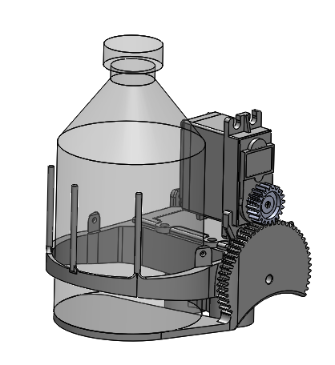
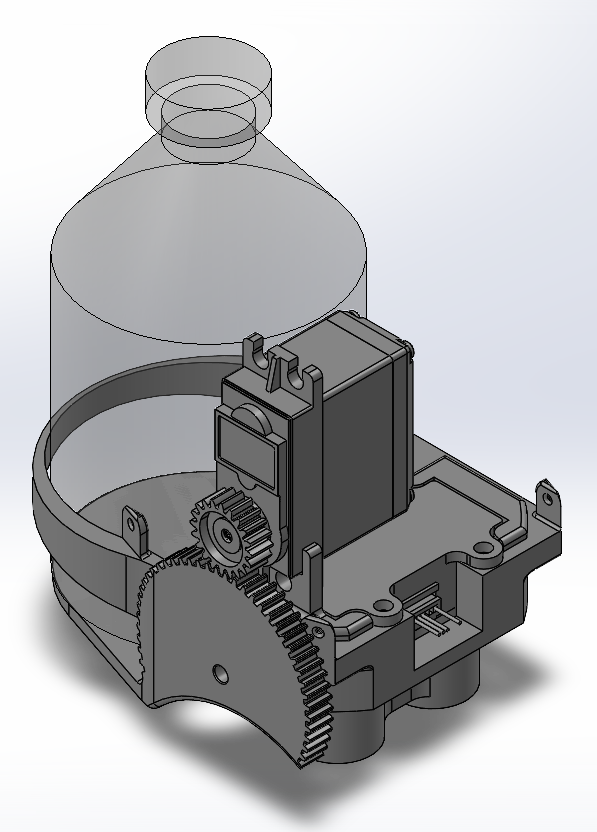

Bachelor Payload Capsule
Supporting files
Additional photos, video recordings, requirements, and project notes. The main case study presents the selected results; these files provide further context and design history.
Each file can be opened or downloaded individually. Expand a category to browse individual files. HEIC images may require downloading to view.
Documents (1)
Read text
Overview: The Bachelor Payload project was initialized by a need for a lighter alternative to a triple payload basket ("Trinity Basket"). The device involves a two-piece snap-together assembly that controls the deployment of a single payload from a UAV above 100 feet. This simplistic design ensures reliable operation during airborne missions while being easy to swap out. Design Parameters: • 3D-printed - Fits on print bed - Minimal supports • Uses same components as other prototypes - 1x Lidar - 1x Arduino Nano - 1x Servo • Lightweight Components: • Flapper - barrier to keep payload normally within the body, rotating open to release the payload when spun by the servo's gear attachment • Body - houses the payload and constrains the flapper to rotate • Lockball (Optional) - experimental component inserted into the gap in the flapper snap mechanism to make rotation smoother and to prevent accidental disassemblydocuments/Summary - Bachelor Payload Capsule.txt · 0.00 MB · Download
Media/Images (2)

media/images/bachelor-iso.png · 0.06 MB · Download

media/images/bachelor-mk1.png · 0.15 MB · Download


Notes (1)
Read text
# Bachelor Payload Capsule ## Purpose Release a single payload from a UAV operating above 100 feet while simplifying payload-module replacement. ## Requirements and constraints - Minimize weight. - Reuse one lidar, one Arduino Nano, and one servo. - Fit printed parts on the print bed with minimal supports. ## Engineering contribution Designed the body to retain the payload and guide the rotating flapper. An optional experimental lockball supports smoother rotation and helps prevent snap-joint separation. Files document two design iterations. ## Outcome and limits The capsule was tested by dropping it from a tall balcony; it was not tested in flight. The design was subsequently scrapped because the team changed the direction of the payload capsule. ## A simpler single-payload capsule Before: The project began as a lighter alternative to a triple-payload basket. After: The retained Mk2 design uses a snap-together body and servo-driven flapper. Only Mk2 CAD is available; the photos alone do not establish the exact Mk1-to-Mk2 geometry changes.
project-notes.md · 0.00 MB · Download